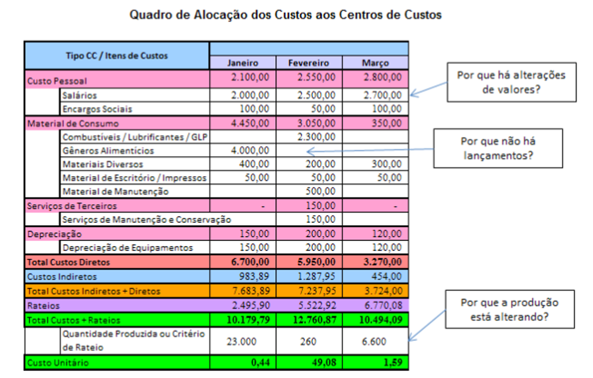

Os relatórios gerenciais permitem a produção das informações adequadas às diferentes necessidades dos usuários. Alguns possíveis relatórios podem ser apresentados a título de exemplificação. Para os relatórios, vale retomar, em linhas gerais, a discussão acerca das características intrínsecas e das características extrínsecas da informação. As características intrínsecas da informação estão relacionadas ao emissor, ou seja, os gestores responsáveis por sua produção. São exemplos de características intrínsecas: periodicidade, granulometria, tempestividade, clareza, entre outras. Quanto às características extrínsecas, aquelas relacionadas ao receptor, deve-se destacar a relevância como a mais importante. Aliás, essa característica se justapõe a todas as outras.
Desta forma, pode-se sintetizar que a implantação de um sistema de gestão de custos em uma organização pública baseia-se na distribuição dos custos entre os diversos centros de custos administrativos e intermediários ou auxiliares (ou outros) até os centros de custos produtivos, finais ou finalísticos. Ou seja, como o objetivo final da organização de saúde é o atendimento ao paciente, é esperado que todos os custos criados sejam repassados aos centros de custos finais ou produtivos, segundo critérios de rateio previamente definidos, e, por último, ao serviço final de atendimento (modelodo custeio por absorção).